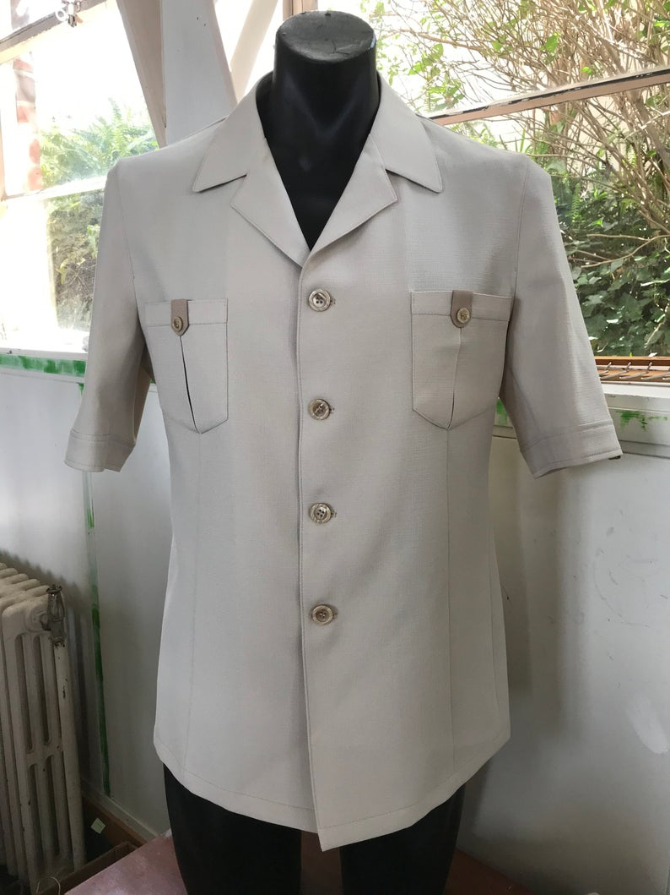
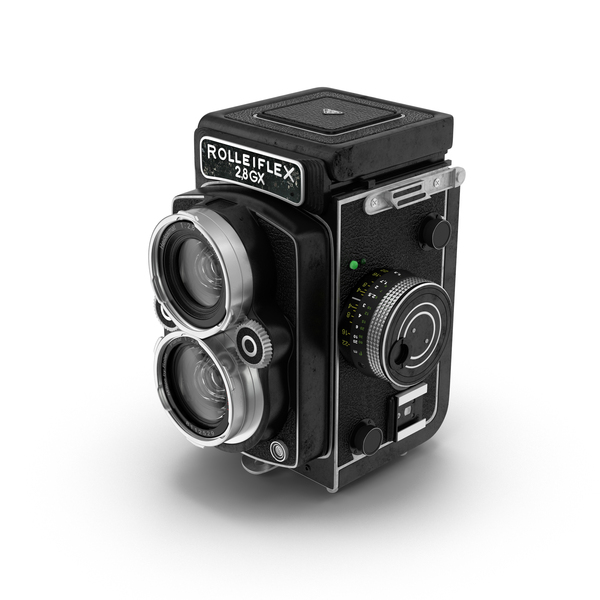

Click the chibby to download charecter profile.

From Soweto
James Dladla is a 64-year-old man born in Soweto and raised in katlehong, Johannesburg. Walking with his steady calculated short strides, He squares his shoulders towards the door of the community hall, his makeshift photography lecture hall. Frequently clasping his hands, he introduces the lecture for the day, a vivid memory drawn from more than 40 years ago when he studied towards a national certificate in photography. The classroom then, was also a makeshift which was dubbed as a church on Sundays.

It is the 26th of the month and the few students will pay for the lessons, from which he draws a salary of R3500,00, an enough amount for a man well taken care of by his two successful children. James straightens his signature gray safari suit and clasps his hands more than once before calling the class to order. He marks the attendance of the month by carefully following the register book through his thick lens glasses hugged by a plastic frame, a vintage on his face.
Rolleiflex.
The students always mock his glasses, as well as his pipe which frequently dances in his lips, yet no one has ever seen it lit. “I wish I could have captured that on camera” James barks across the room, commenting about the ray of light that just bounced off his polished solid gold ring. “All is in order” James rises from behind the oak desk and grabs his favorite camera, his only camera. It is a Rolleiflex TLR Medium Format film camera Xenotar 3.5/75mm Camera – Rolleiflex.
His short sturdy body effortlessly carries his Afro hairstyle which is well punctuated by a neat line on the right side of his wide forehead. James’ ears were perforated during a cultural initiation ceremony when he was a little boy, a symbol of patriotism to the African culture. Yet, His suit is somehow an artifact that glues his admiration of the 70s Italian dress code.
The click of the lens cover and his monotonous and deliberately slow voice signals the beginning of the Saturday lecture. “Inyan’ngempela it’s a beautiful day for photography” Commands James. “During my days….” James begins as the seemingly uninterested Samantha rolls her eyes. James forces a grin, a weird expression of understanding and scorn. He maintains a keep-off face as he hangs his camera over his shoulder and clasps his hands again.
“What I am holding is a tool for activism, a tool I discovered after my dreams of being a train driver were shattered. To me this is a dream reimagined, even if I could not transport Govan Mbeki with a train, this lens has narrowed the space between us” James gives a theoretical background, his command of the English language surprisingly polished. These lenses have seen the Soweto massacres and the fees must fall campaigns, a journey in time. You too can capture memories child, always believe.